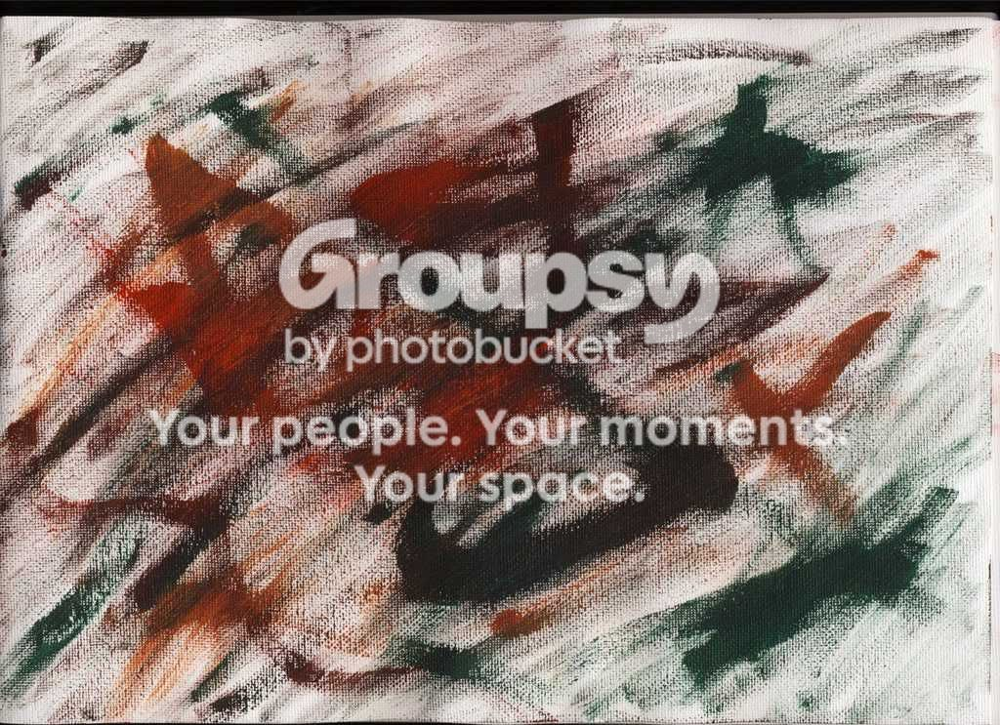
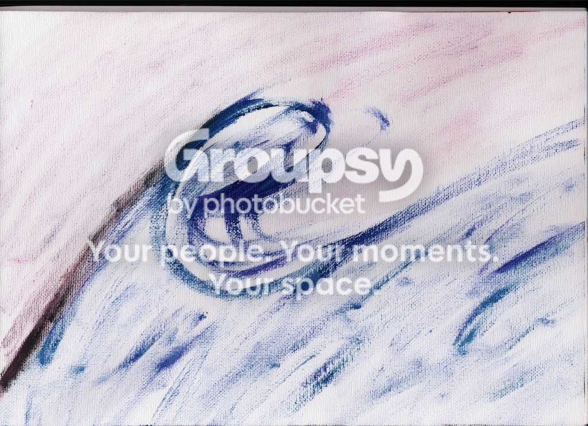

#15170 1 2007-05-10T09:57:18Z fingersonthefrets k heres some stuff that ive done, ive been using photo shop for about 2-3 days, i've had it for about 1 month but only just started practicing
I really like the on above
#320034 2 2007-05-10T09:59:05Z Britannia Not bad, but I think if you tried to concentrate on a render, then move on to no-render, it would probably help - having a starting point, always helped me.
#320356 3 2007-05-11T20:56:43Z usaswim Nice. You have potential. And I agree with BWD.
#320433 4 2007-05-12T03:42:33Z Harley I agree with all of them, but yeah, you do have loads of potential (now you have stroking (borders) skills!)
#320452 5 2007-05-12T05:32:34Z Hendor I rather like that Mother's Day one. Pretty darn good for someone who just discovered photoshop a week or two ago.
#320458 6 2007-05-12T05:58:43Z catspride I agree. That Mother's Day one is sweet. Nicely done.
#320461 7 2007-05-12T06:30:55Z fingersonthefrets hah!
the mothers day one is pretty cheap actually, i just uses two brush types, 4 colours, and the text

really simple

#320466 8 2007-05-12T07:53:59Z Weisslenny0 Nice
It'll sound stupid, but how'd you do the first one? Like I get the pinkish 'V', but how'd you draw the background?
#320471 9 2007-05-12T08:49:17Z fingersonthefrets the background was an image, a nice looking pic of a flower that i just screwed around with a bit with filters and hue saturation to get the the effect
I also used a pic for the one for L.V
other than that they have no pics
(which i think means they're vectors?)
also if any one wants an avy or a sig ill give it a go very happily
i'd like some more experience but be warned, im not that good
#320595 10 2007-05-12T21:55:32Z Bunniesandsheep yup, not bad. I'm no photoshop expert so I cant really give you advice.
#321076 11 2007-05-14T10:30:57Z fingersonthefrets accepting basic - basic-ish sig requests as of now
#321089 12 2007-05-14T11:18:03Z Britannia You're getting better. The Mother Day one is, as everyone else say, sweet.
Also, where did you get that render of Hatake?
#321090 13 2007-05-14T11:20:54Z fingersonthefrets #321092 14 2007-05-14T11:31:12Z Britannia Thanks, and I look forward to more!
#322234 15 2007-05-18T12:16:52Z fingersonthefrets k i think that first post has gotten a little big, ill be posting the pics in other posts now
#322256 16 2007-05-18T15:31:35Z Xév These are very nice. Keep up the good work!

#322450 17 2007-05-19T09:25:32Z fingersonthefrets
yeh... made it pretty quickly but... whatyagonnado
#323496 18 2007-05-23T07:12:43Z fingersonthefrets #323508 19 2007-05-23T08:47:33Z LittleViking I love your work, but your dark sigs are just too dark for me. I have to turn up the brightness on my monitor to see the detail in them. You might want to try raising the contrast and playing with the levels in your dark ones to make it easier for people like me to see.
#323509 20 2007-05-23T08:54:47Z fingersonthefrets thanks for the advice, ill take it into account

#323514 21 2007-05-23T09:46:05Z Ad Woo for Air font.
I agree, think they could be a tad brighter.
#323524 22 2007-05-23T10:55:09Z Zres 
That is love at first sight.
#323531 23 2007-05-23T11:43:52Z seven_two @Zres
... Even more so since my nickname is put in.
#323543 24 2007-05-23T12:37:04Z fingersonthefrets
avys for sale, get your avys for sale
and basic sigs later
officially a avy and sig shop
#323602 25 2007-05-23T19:46:50Z usaswim Wow frets, you're really improving. Great sig. I'm too lazy to improve
#323783 26 2007-05-24T06:17:03Z fingersonthefrets thanks!
btw can you pm me and tell me how to do that thing how you have links on your sig? its very kool

#323799 27 2007-05-24T08:16:45Z Britannia #323801 28 2007-05-24T08:40:29Z fingersonthefrets it does... but im still confused.... oh well ill get it when i understand ps more
#323804 29 2007-05-24T10:00:05Z CDotLeach I wouldn't mind a new sig at the moment, can you do me one please Frets?
Anything with kirby or mario in it. Don't put Gangsta-Skorp though, instead can you put CDotLeach.
Thanks...
#323816 30 2007-05-24T10:46:48Z Harley [code]
tags emliminate the use of the tags, therefore not needing the *s.
[img]http://i193.photobucket.com/albums/z2/usaswim/Mario%20signature/upper_left.png[/img]
[url=http://numa.notdot.net/map/86501]
[img]http://i193.photobucket.com/albums/z2/usaswim/Mario%20signature/upper_right.png[/img][/url]
[url=http://numa.notdot.net/browse?sort=rating&order=desc&author=usaswim&bitesized=true]
[img]http://i193.photobucket.com/albums/z2/usaswim/Mario%20signature/bottom_right.png[/img][/url]
[img]http://i193.photobucket.com/albums/z2/usaswim/Mario%20signature/bottom_left.png[/img]
#323915 31 2007-05-24T21:53:22Z usaswim #324074 32 2007-05-25T07:12:04Z Britannia Never even checked you're thread, to be totally honest with you.
And on another note, Chasethebase had this style of in-built links in his signature way back in late '06, so it's nothing really new.
Oh, and can I ask if I can have you're red brushed signature while I'm at it?
#324566 33 2007-05-27T05:36:41Z fingersonthefrets I wouldn't mind a new sig at the moment, can you do me one please Frets?
Anything with kirby or mario in it. Don't put Gangsta-Skorp though, instead can you put CDotLeach.
Thanks...
woops, missed that, im working on it now and its not that great but you can decide,
edit: sorry it's kinda embarrasingly bad now... also you seem to already have got one
#331101 34 2007-06-14T06:49:09Z fingersonthefrets
i made it with usa's grunge tut.

looks kinda... retro grunge weird, i love it
#331113 35 2007-06-14T08:05:26Z apg
i made it with usa's grunge tut.
looks kinda... retro grunge weird, i love it
Kind of 'glitchy' grunge... I like that. Except that the font doesn't seem to fit it at all.
#331138 36 2007-06-14T10:04:25Z fingersonthefrets i dunno, i just like the clash between bground and the font...
and as it's my sig, im gonna keep it that way
sorry apg
#331142 37 2007-06-14T10:31:21Z apg Your signature, your rules.
#332987 38 2007-06-19T11:05:01Z fingersonthefrets i like this
Attachment (lost): post-20-1182251101.jpg
#340830 39 2007-07-09T11:18:58Z fingersonthefrets Hey sorry for the double post but i'd just like to say ive started drawing and painting, im pretty bad but with time will hopefully improve, at the moment im painting a couch/sofa/chair thing floating in the middle of the sea
i think my style will be .. some weird impressionism-ish thing
i was wondering how many other people painted/ drew and if they could give me some advice
ill update this post with a scan of my floating chair sketch some other time.. if i remember
#340847 40 2007-07-09T12:11:29Z seven_two The bunny is well-drawn.
#340946 41 2007-07-09T17:08:45Z usaswim The bunny is well-drawn.
It's a brush
It's a really good brushset, I couldn't find any use to it though.
http://www.deviantart.com/deviation/41545917#341135 42 2007-07-10T01:14:45Z fingersonthefrets agreed, they look really nice but they are just quite... useless. Unfortunate

#343276 43 2007-07-15T10:49:29Z jbaker hey do you think you could do a sig with a dragon in it, kinda like the one I have now but a bit clearer?
#349216 44 2007-07-31T02:21:41Z fingersonthefrets oh! didnt see your request.. umm ill try and give it a go
anyways here are some little painted sketches i've done in a canvas A4 pad:
frog
chaos

stylized wave

hopefully you'll be seeing a larger painting by me soon
#349232 45 2007-07-31T02:58:24Z usaswim Those are... interesting.
#349235 46 2007-07-31T03:00:18Z fingersonthefrets
avy's i made a while ago
you can use but as a payment can you comment on my painting sketches
#349238 47 2007-07-31T03:09:58Z Gforce20 I can't make anything out of the last oen, but all the rest are cool.
#349240 48 2007-07-31T03:13:16Z fingersonthefrets if you have a computer with one of those screens that you can touch and its bad for the computer and stuff.. if you know which i mean.... look at the last on with your head turned nearly 90 degrees to the left looking towards it and it should look better... ahem
edit: THE PAINTINGS LOOK AT THE PAINTINGS

#349402 49 2007-07-31T18:21:15Z Samrat16 Erm...Interesting sketches...they could be interpreted in multiple ways.
#349414 50 2007-07-31T18:50:07Z Gforce20 I meant the avatar. The last one is too dark.
#349554 51 2007-08-01T01:25:12Z fingersonthefrets Erm...Interesting sketches...they could be interpreted in multiple ways.
Quote
Those are... interesting.
hahaha everyone hates my sketches... oh well

edit: gforce, so did I
#369577 52 2007-10-04T06:23:55Z fingersonthefrets boring but ok painting:
http://s152.photobucket.com/albums/s195/fi...nt=IMG_0446.jpg
very very very very awesome painting:
http://s152.photobucket.com/albums/s195/fi...nt=IMG_0450.jpg
i really want to see how you like these, especially the second one
Cursing goes in BnT. Not outside of BnT!
sorry LV
#369816 53 2007-10-05T11:15:17Z fingersonthefrets this picture is a magazine cover for english
i think it turned out pretty well, BUT CAN YOU COMMENT ON THE PAINTINGS ABOVE
Attachment (lost): post-20-1191582917.png
#371445 54 2007-10-12T10:19:30Z fingersonthefrets 3 posts in a row?! come on guys comment, especially on these and the paintings.
After seeing seven_two's suggestion of making a logo for yourself instead of a username i experimented a bit and found a nice little design i liked.. then i messed around with it a bit and created variations. here you are, my new logo set (my use only
)
Attachment (lost): post-20-1192184370.jpg
#371449 55 2007-10-12T10:32:30Z apg Out of those ones, the first, fifth, and possibly the second seem fairly usable. The rest - particularly the last one - have too many small details that may cause problems when scaled down. I'd also suggest vectorizing the logos so you can resize them freely, assuming you haven't already.
#371450 56 2007-10-12T10:37:50Z fingersonthefrets hmm i dont know how to do the vector thing
either that or i dont know that what im doing is the vector thing
the last one works well down to about 60 px so it's not too bad, and since that is the grungy one out of the lot it should fit in more in the sig being big (well it would normally for me grunge wise anyways)
.. if you get what i mean
also the paintings? (especially the 2nd one) (3 posts above your post)
EDIT: and thanks for commenting, especially so quickly
#371653 57 2007-10-13T12:31:15Z fingersonthefrets new sig

#371669 58 2007-10-13T13:53:19Z 3v!1 Whoo, rainbowy. Pretty simplistic, though.
#371672 59 2007-10-13T14:16:16Z seven_two Simplitastic. I liked how you toned down the colours.
#371686 60 2007-10-13T15:13:54Z McP3000 I like the pixies one...because i dislike the pixies
#371790 61 2007-10-14T00:40:33Z fingersonthefrets I like the pixies one...because i dislike the pixies
....
YOU SUCK
#373174 62 2007-10-20T08:05:08Z fingersonthefrets my first shot at reflections, done in 10-15 mins, looks ok I think
EDIT: ( i know i kinda screwed up the border, oh well)
Attachment (lost): post-20-1192867508.png
#373189 63 2007-10-20T10:25:22Z Condog meh, you can do lots better, but i can see this going somewhere.
#373193 64 2007-10-20T10:38:48Z seven_two What's with reflections? They are so cliche. ;_;
Oh, what about something interesting with reflections if you insist? Like, the reflected image has a hidden text inside..
#373198 65 2007-10-20T10:49:52Z Condog What's with reflections? They are so cliche. ;_;
Oh, what about something interesting with reflections if you insist? Like, the reflected image has a hidden text inside..
oh, how about there is text right, and in the relection,
it says something different...
#373199 66 2007-10-20T10:53:37Z fingersonthefrets 
new one, works a heap better than the other
Attachment (lost): post-20-1192877775.png
#373203 67 2007-10-20T11:10:33Z Condog way better than the last one. do the word thing!
#373283 68 2007-10-20T20:50:30Z catspride I agree. Looks like you have the reflecting down.
I posted a tutorial in my thread if you wanted to look at it.
#409226 69 2008-02-13T23:11:57Z fingersonthefrets
hehe, i like these.. i have no idea how i got the idea...
#409235 70 2008-02-13T23:32:35Z kkstrong0 I'm....speechless.
#409272 71 2008-02-14T01:54:08Z T3chno Ummm. Too big. But it's unique.
#409335 72 2008-02-14T07:14:06Z southpaw IT'S JUST SO DAMN CREEPY!!!
#409343 73 2008-02-14T07:57:42Z Ad <3 That new one.
#409366 74 2008-02-14T10:53:59Z fingersonthefrets thanks guys
#409424 75 2008-02-14T19:27:43Z Bunniesandsheep Smaller and I'd

it more
#409428 76 2008-02-14T19:44:14Z Ad One thing, shouldn't it be BarbieQ? Or BarBQ?
Barbie BBQ is one too many Bs!
#409437 77 2008-02-14T20:40:30Z fingersonthefrets One thing, shouldn't it be BarbieQ? Or BarBQ?
Barbie BBQ is one too many Bs!
you're right, i should of made it barbieQ... oh well, tis a cool-ish name as it is anyways